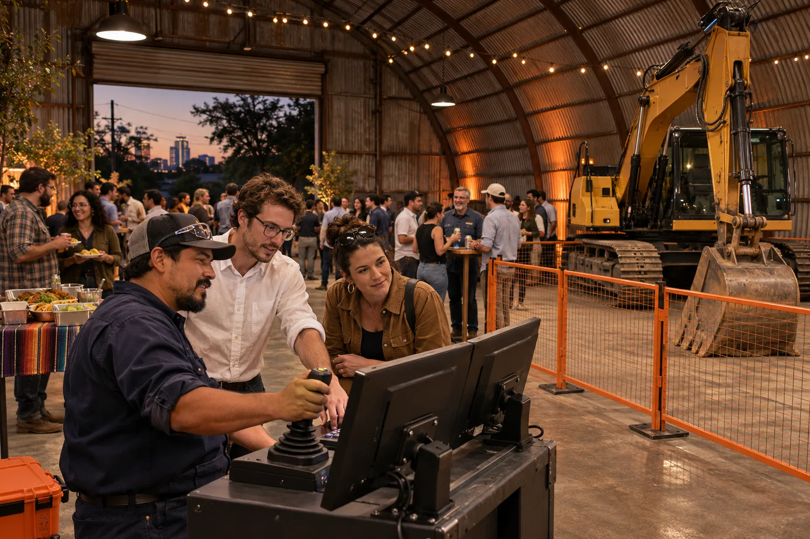
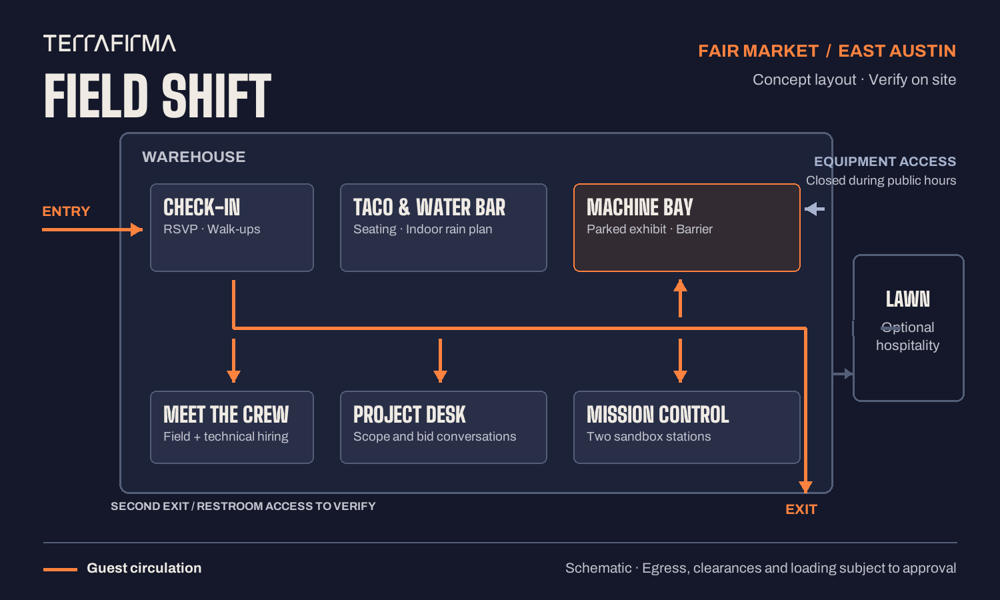

Walk the machine
See an equipment operator explain the real retrofit on a parked excavator. Check in, pick up a field card, and start at the machine.

Event concept renderingAn after-work open house where operators and engineers show how they move dirt together. See the machine, try the controls in simulation, and talk shop with the people who do the work.
Event concept
One shared experience for operators, mechanics, engineers, builders, and Austin’s construction community. Every guest can walk the same route and choose their own next step.
See an equipment operator explain the real retrofit on a parked excavator. Check in, pick up a field card, and start at the machine.
Work through a short grading scenario on a demo console using simulated or approved replay data, coached by an operator and an engineer.
Grab tacos, meet hiring leads, or bring an upcoming earthworks scope to a project lead. Book a next step before leaving.

Free RSVP-first open house. Offer two suggested arrival windows, 5:30 and 6:30 p.m., and two repeat demos. Welcome walk-ups only when capacity allows. Aim for a 45–75 minute visit with seating, free water, tacos, and alcohol-free drinks as the default. If the venue and caterer support it, serve beer through the licensed vendor after the demo station. Plan for guests 18 and up at Fair Market, pending venue confirmation.
Plan for 90 talent, 40 customer and project contacts, and 30 community and media check-ins. Allocate the 240 RSVP places roughly 135/60/45 across those groups and release unused holds in the final week. Confirm the legal room limit with the venue, count entries and exits at the door, and cap each arrival window to fit the approved layout. Guests choose a primary intent at RSVP and can take multiple next steps. Target an even recruiting split across field and technical tracks. Publish plain-language invitations, transit, parking, and accessibility information. Provide a Spanish RSVP summary and a bilingual field host, and let people talk to a recruiter without uploading a résumé.
At the console, guests interpret a grade target and see the effect of one control input in a sandbox. Two stations at ten minutes per slot yield up to 24 hands-on seats across two programmed hours, plus a mirrored display for everyone. Reserve 12 places at RSVP and 12 for walk-ups. The field card asks guests to bring one question for the operator or engineer and carries three short URLs for careers, project discussions, and the recap.
Fair Market, 1100 E. 5th St. · Recommended. The venue publishes a 12,000 sq. ft. indoor warehouse, a 10,000 sq. ft. lawn and a drive-in loading ramp. Use the warehouse for the main event and the lawn for optional hospitality overflow. Walk the site with the venue and Fleet to verify trailer access, door height, turning radius, floor and ramp loads, restrooms, occupancy, independent exits, and accessible routes. Place a weekday hold only after the venue quotes the full operating window. Venue specifications
The White Horse, 500 Comal St. · Lean option. A private, 21+ East Austin honky-tonk buyout could work for a 60-person evening using a console, approved machine components, and job footage. Confirm rates, bar minimum, quiet programming window, and access. A separate daytime visit or virtual session serves students and candidates under 21. White Horse private rentals
Downtown lot near Speakeasy · Larger option to investigate. Use the bar as a potential hospitality partner if the parcel near 412 Congress is available. Identify the exact lot and owner, confirm lease rights and insurance, and validate loading, ground bearing, accessible restrooms, noise, and weather cover. Price the larger format at Fair Market as a backup if the lot falls through. Downtown venue map
Use TerraFirma hardware and people. Fleet selects a clean, transportable machine from the working fleet. Isolate the powered-down exhibit behind a barrier with a spotter, approved by Field Ops and Safety. Sim and replay inputs remain disconnected from the machine. If the display cannot be approved, use an actual approved module and projected job footage. Put any powered field demo on a separate invitation at a company-approved test site. TerraFirma’s AGC Austin demonstration · Buda EDC headquarters and test-space announcement
Production & staffing
After-work hours fit a field shift and a desk day. Repeat the demo twice so guests can make either arrival window.
| Time | Cue / action | Accountable owner |
|---|---|---|
| 12:30–1:00 | Venue handoff, vendor roll call, protect floor, mark exhibit perimeter and material route. | Producer + venue manager |
| 1:00–2:15 | Clear the path, unload machine, secure static display, photograph condition and clear trailer. | Fleet lead + hauler + Safety |
| 2:15–3:45 | Set barriers, console/AV, Wi-Fi and offline replay, signage, hydration, check-in and tables. | Producer + AV + technical lead |
| 3:45–4:30 | Walk exits, venue capacity, queue, accessible route and emergency muster. Test check-in and three QR paths. | Safety + venue manager + CRM lead |
| 4:30–5:15 | Rehearse operator/engineer talk, screen feed, guest flow and fallback. Review weather and staff assignments. | Producer + Field Ops + technical lead |
| 5:15–5:30 | Final go/no-go. Staff posts, open RSVP list and cue lobby. | Safety + producer |
| 5:30–6:00 | Doors, tacos, media preview, guided machine walkarounds and first recruiting or project introductions. | Check-in lead + Brand + floor lead |
| 6:00–6:15 | Brief founder welcome, then operator and engineer show one real job sequence with approved footage. | Brand emcee + operator + engineer |
| 6:15–7:00 | Console slots, trade and technical hiring conversations, booked customer consults. | Technical lead + Talent + BD |
| 7:00–7:15 | Repeat paired demo for second wave, then one audience question. | Brand emcee + operator + engineer |
| 7:15–8:15 | Stations continue. Last simulator call at 8:05, then collect interest and book next steps. | Floor lead + Talent + BD |
| 8:15–8:30 | Close bars and stations, direct guests to exits, secure devices and check-in records. | Producer + venue + CRM lead |
| 8:30–9:45 | Clear all guests before equipment movement. Strike AV, load exhibit with spotters, remove signs and waste. | Fleet + Safety + producer |
| 9:45–10:30 | Venue walkthrough, inventory, incident check, and reconciled attendance count. | Producer + venue manager + CRM lead |
Staffing plan. Nine TerraFirma posts during doors: Brand/emcee (1), Field Ops operator (1), Safety/fleet marshal (1), engineer and console coach (2), Talent hosts covering field and technical roles (2), BD/project lead (1), registration and CRM owner (1). Vendor positions: producer and floor lead (2), check-in support (1), AV (1), security/first aid per venue sign-off (2 planned), one content shooter, one venue manager, and scheduled catering and haul crews. Name a relief person for each critical post at rehearsal; Safety signs off on all load movements.
Planning estimate · USD
Choose the 160-person pilot for enough recruiting and customer conversations to assess the format, with a real machine on site.
60 guests · White Horse buyout assumption. Component display, one console, and a small crew.
160 guests · Fair Market. Static machine, two console stations, and dedicated Talent and BD hosts.
300 guests · Expanded venue or verified downtown lot. More demo capacity, hosts, and production.
| Line item | Lean | Recommended | Larger |
|---|---|---|---|
| Venue / buyout / site services | $1,800 | $5,800 | $10,500 |
| Round-trip equipment haul and unload | $0 | $2,750 | $5,700 |
| AV, console rental support, power and Wi-Fi | $900 | $2,200 | $4,600 |
| Barriers and floor protection | $250 | $900 | $1,800 |
| Furniture, shade and weather equipment | $350 | $1,150 | $2,700 |
| Tacos, beverages, hospitality labor | $1,650 | $4,200 | $9,300 |
| Signage, field cards and wayfinding | $250 | $700 | $1,500 |
| Insurance and permit allowance | $450 | $1,050 | $2,200 |
| Security, safety and first aid vendors | $450 | $1,350 | $3,100 |
| Content capture and editing | $400 | $1,300 | $3,500 |
| Producer, floor and check-in support | $550 | $1,400 | $3,000 |
| Registration and accessibility supplies | $150 | $350 | $900 |
| Paid local promotion | $400 | $1,000 | $2,000 |
| Subtotal | $7,600 | $24,150 | $50,800 |
| Contingency · 15%, rounded up | $1,140 | $3,623 | $7,620 |
| Total | $8,740 | $27,773 | $58,420 |
Hospitality assumes roughly $26 per guest in the recommended scenario, with a modest crew allowance inside the line. Use tax-, service- and gratuity-inclusive bids and reconcile any bar minimum against the hospitality and venue lines. Haul is one workday round trip. Existing TerraFirma equipment, staff time, software and approved footage are contributed resources. Brand tracks commitments weekly, including deposit exposure and cancellation terms. Preserve contingency until Ops and Producer close open items.
Promotion · capture · follow-up
Measure attendance once. Track recruiting and customer actions by intent and follow up with a named owner while the conversation is fresh.
Unique check-ins. Aim for 15,000 local campaign impressions and 150 visits to the recap by day 14.
Qualified, opted-in talent leads, aiming for 15 field and 15 technical. Book 12 first screens by day 14.
Qualified project leads. Book 5 discovery calls by day 14 and create 2 scoped opportunities by day 30.
T–4 weeks · Brand. Launch the RSVP page, founder and company posts, one real jobsite clip, and a team referral kit. Pitch a limited preview to local media with an operator available for interviews. Use the Austin billboard line, “Keep Austin building,” with current jobsite footage and the operator/engineer pair.
Talent · Talent lead. Reach field operators, mechanics, dispatch, and site leads through crew referrals, workforce partners, and trade channels. Reach robotics, software, controls, and civil engineering candidates through UT community leads and direct alumni outreach. Invite ACC’s Infrastructure Academy and Texas Robotics as prospective distribution partners. Give field and engineering voices equal time in promotion and at the event. ACC Infrastructure Academy · Texas Robotics Graduate Students
Customers · BD. Send personal notes to 40 named Austin-area general contractors, civil contractors, developers, and owners from the active prospect list. Ask AGC Austin about sharing. Offer ten bookable 12-minute project conversations across two hosts and ask guests to bring a site, scope, or schedule question. TerraFirma’s prior AGC demonstration gives the invite a concrete proof point. AGC demo
T–2 weeks to doors · Brand + Talent + BD. Publish a short operator-led demo preview and a paired engineer post. Put the $1,000 boost behind local proof footage and RSVP traffic. At T–7 days, check for 180 of 240 RSVPs and review field/technical and buyer mix. Patch gaps via partner sharing and direct invitations. Send RSVP reminders at T–48 hours and day-of. Use unique links for partners, invites, and paid placements.
| Audience | Capture and qualification | Follow-up and measurement |
|---|---|---|
| Brand | Unique RSVP/check-in ID; partner, paid, and earned source; distinct press/recap QR. Optional media opt-in. | Brand sends recap by day 2 and reports local impressions, unique check-ins, recap visits, and earned mentions at day 14. Compare recap traffic with the prior 14-day baseline for owned web traffic using the same geo and channel filters. |
| Talent | Role family, experience or link if volunteered, work-location interest, contact permission. Qualified means the recruiter confirms fit to an active role or hiring priority and interest in a conversation. | Talent sends role-specific next steps by day 1, reviews and routes records by day 3, books 12 screens by day 14 and reviews applications and interview progression at days 30, 60, and 90. |
| Customers | Company, role, site region, scope and estimated timing. Qualified means local earthworks fit, contact’s role in the project, and an actionable window or bid. | BD sends personal notes by day 1, records discovery meetings by day 14 and logs 2 scoped opportunities by day 30. Track bids and pipeline status at days 60 and 90. |
Use the approved registration, ATS and CRM systems. RSVP asks for name, email, primary intent, optional access needs, and a separate opt-in for future outreach. Check-in marks attendees once, using registration ID with email fallback. QR and short URLs route to three forms. Staff have an offline check-in list and can assist guests directly. Sync opted-in leads on day 1 with event source and campaign tag, deduplicate by email and account, log owner and next action, then remove temporary exports under company policy. Keep access requests with the producer, outside recruiting and sales records.
COO review at day 30: compare actual spend and attendance with the plan, first screens and scoped opportunities with the targets, and record the best-performing invite sources. Repeat at this scale if both business funnels hit their first-step targets and the venue and safety debrief supports it. Use an audience-specific follow-up to work the stronger funnel if one underperforms.
COO review
Authorize a venue walkthrough and all-in quotes against a $28,000 planning cap. Assign one lead each from Brand, Field Ops, Talent, and BD. Confirm which machine, priority roles, and upcoming earthworks scopes should anchor the first Austin event.